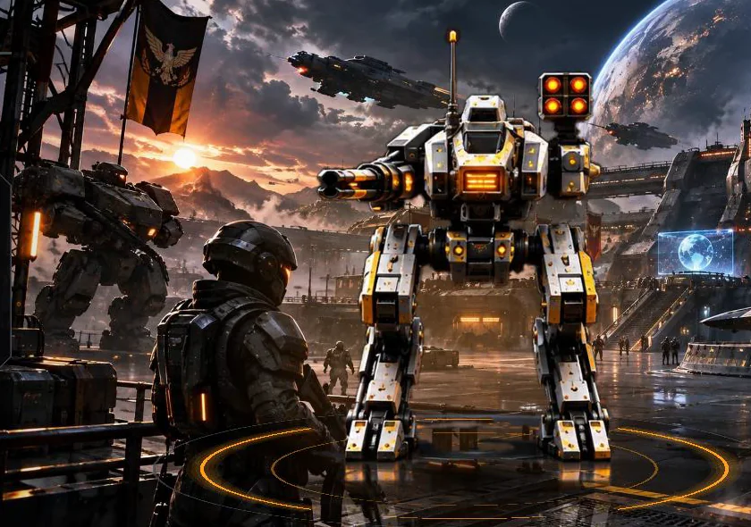
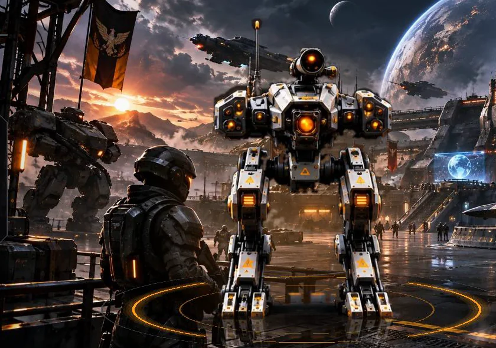
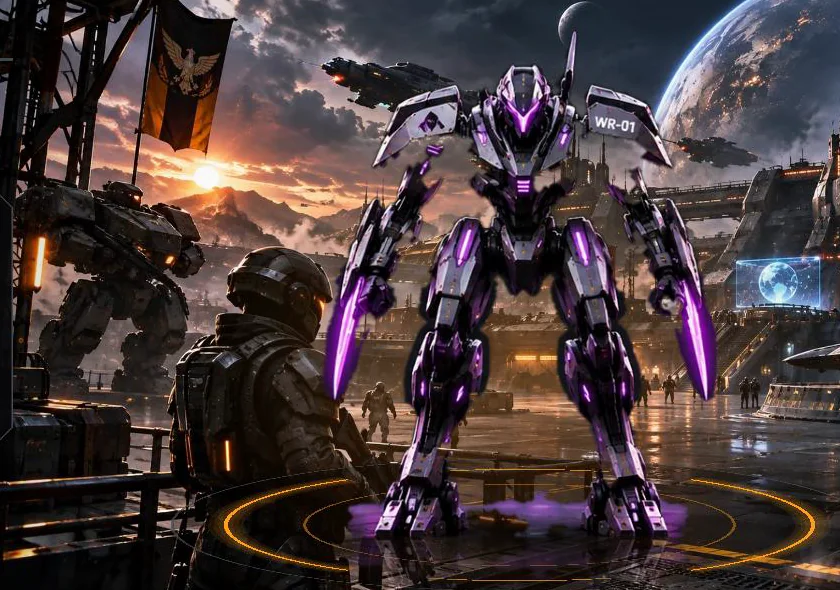
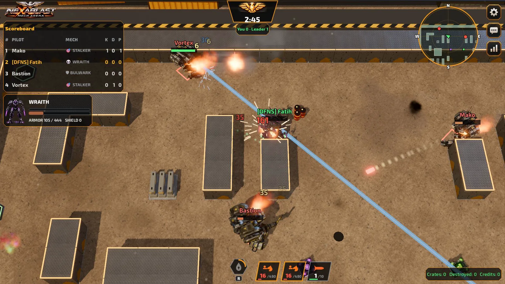
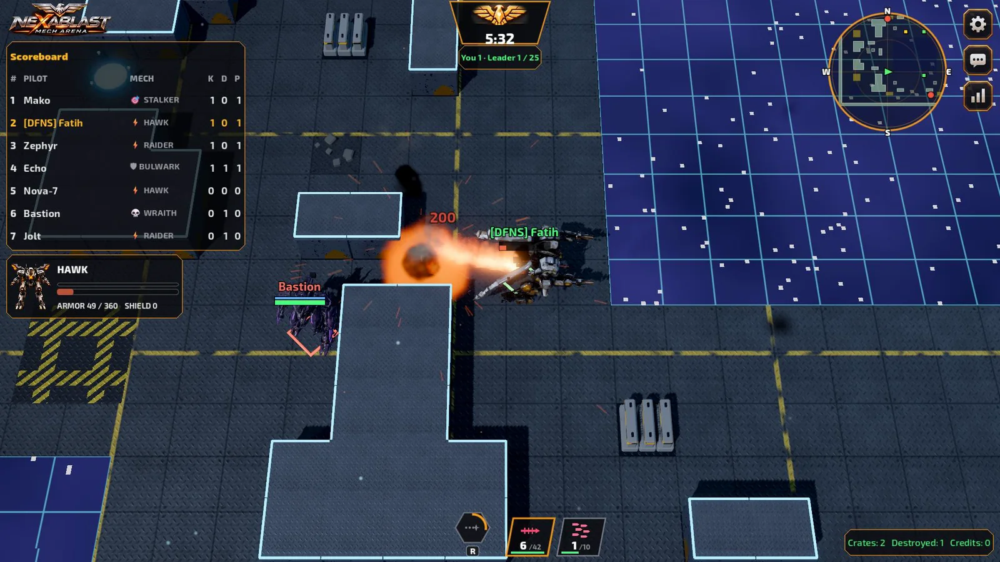
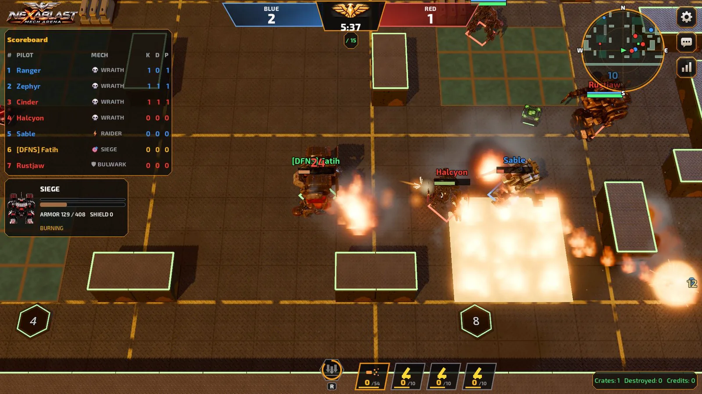
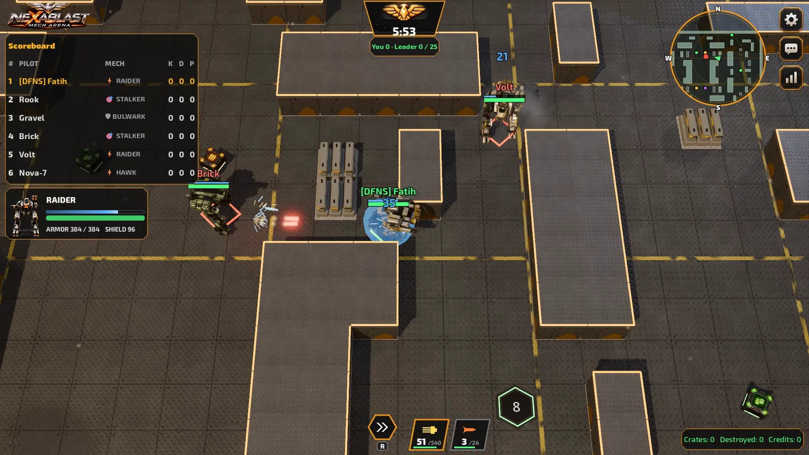
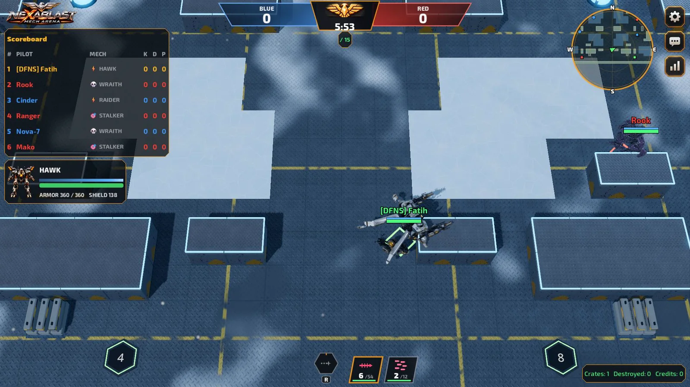

Hız
AKINCI
Hafif · hızlı kanat saldırganı
Jet Atılımı: Gittiğin yöne ani bir sıçrayış.
Hızlı, patlayıcı, yukarıdan bakışlı robot savaşları. Gerçek pilotlara karşı birkaç dakikalık maçlar: telefonda, bilgisayarda ve tarayıcıda. Ücretsiz.
Ultra grafiklerle, oyunun kendisinden kaydedilmiş görüntüler.
Nexablast'ta sekiz savaş robotundan birini seçer, silahlarını takar ve kısa, yoğun arena maçlarına girersin. Moda göre en çok skoru yapan, hedefe ilk ulaşan ya da son ayakta kalan kazanır. Kazandıkça kredi ve deneyim toplar, robotunu geliştirir, yeni robotların kilidini açarsın.

Dört sınıf: hız, tank, hasar ve keskin nişancı. Akıncı ve Avcı ile başlarsın; diğerleri sandıklardan çıkar.







Kısa bir mola için Hızlı Savaş, arkadaşlarınla Takım Savaşı, sinirleri germek için Sona Kalan Kazanır.

3 dakika, 2-4 pilot. Boş yerleri botlar doldurur.

8 pilota kadar. 25 öldürmeye ilk ulaşan ya da 6 dakikada en iyisi kazanır.

4'e 4'e kadar. 15 takım öldürmesine ilk ulaşan takım kazanır.

10 dakika, hızlı yeniden doğma. En yüksek skor kazanır.

Yeniden doğma yok, arena 2. dakikadan sonra daralır.

Bire bir, 3 rauntta 2 alan kazanır.
Her dünyanın kendi tehlikesi var: kum fırtınası, lav, buz, metan ve düşük yerçekimi. Sandıklar, patlayan variller ve siperler savaşın yönünü değiştirir.




8 pilota kadar maçlar, 6 harfli oda kodu, hızlı eşleşme ve 4 kişilik parti. Aynı hesap telefonda, PC'de ve tarayıcıda.
Partide, oda lobisinde ve maçta konuş. Bas-konuş ya da her zaman açık; istediğin pilotu tek dokunuşla sustur.
3'e 3 dereceli maçlar ve Demir'den Şampiyon'a 8 lig. Her lige ilk çıkışta ödül.
8 bölüm, 40 görev, 8 boss. Brifingler Türkçe ve İngilizce seslendirmeli.
Klan etkinlikleri, haftalık klan savaşı, turnuva ve her hafta değişen arena kuralı.
6 haftalık sezonlar, 50 kademe, günlük ve haftalık görevler, 65 başarım.
Tam kontrolcü desteği, değiştirilebilir tuşlar, nişan yardımı ve ayarlanabilir dokunmatik kontroller.
3 renk körlüğü modu, 4 yazı boyutu, parlamaları azaltma, sarsıntı ve titreşimi kapatma.
Hepsi oyunun güncel sürümünden.
* RAM, işlemci ve boyut değerleri tahminidir; Android sürümü, işlemci mimarisi ve grafik arayüzü oyunun derleme ayarlarından alınmıştır. Çevrimiçi modlar için internet gerekir.

NEXABLAST: Mech Arena nedir? Ücretsiz robot arena nişancı oyununun modları, mech'leri, hikâyesi ve platformları hakkında bilmen gereken her şey.
NEXABLAST'taki 8 mech karakteri: AKINCI, AVCI, KALKAN, ŞAHİN, GÖLGE, FIRTINA, TOPÇU ve DEV'in silahları, özel yetenekleri ve değerleri.
NEXABLAST'ta hangi mech sana uygun? Hız, tank, hasar ve keskin nişancı sınıflarını oyun tarzına ve moda göre karşılaştırdık.
Aynı hesapla tüm platformlarda.